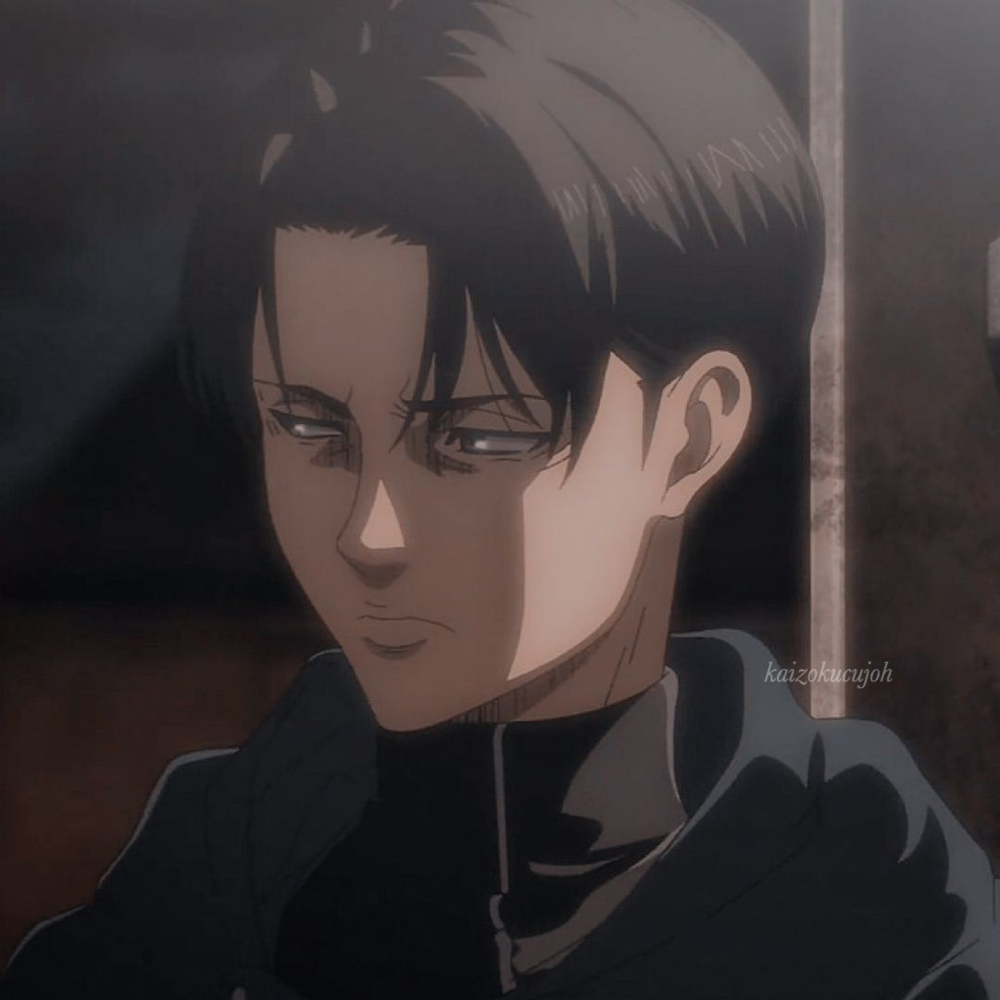

∴∵∴ ୨୧ ∴∵∴
— [♡] ;ASSISTIR ANIMES
Comecei a gostar bastante de ver animes durante a pandemia.
As vezes pra passar o tempo, as vezes ficar até de madrugada assistindo,
eu acho uma boa forma de passar o tempo, já que não podemos sair de casa!
Eu já gostava bastante de animes, mas durante a quarentena
resolvi limpar a lista de animes imensa que eu tenho desde 2017 para assistir!
Alguns animes que eu vi ou que ainda estão na minha lista são:
⇾Kimetsu no Yaiba
Em Demon Slayer - Mugen Train, durante o período Taisho no Japão,
o jovem Tanjiro volta para casa depois de um dia de trabalho e encontra sua família
brutalmente assassinada por um demônio. Para pior a situação, sua irmã mais jovem,
Nezuko, foi transformada em uma criatura demoníaca. Agora ele precisará
lutar para vingar sua família e recuperar a irmã.
∴∵∴ ୨୧ ∴∵∴
⇾Jujutsu Kaisen
Apesar do estudante colegial Yuuji Itadori ter grande força física,
ele se inscreve no Clube de Ocultismo. Certo dia, eles encontram um “objeto amaldiçoado”
e retiram o selo, atraindo criaturas chamadas de “maldições”. Itadori corre em socorro de seus colegas,
mas será que ele será capaz de abater essas criaturas usando
apenas a força física?!
∴∵∴ ୨୧ ∴∵∴

⇾Attack on Titan
Eren Yeager vive em um mundo rodeado por enormes muralhas
para se proteger de criaturas gigantescas, os Titãs,
que anos atrás realizaram uma verdadeira carnificina na cidade.
Os sobreviventes buscam formas de recuperar seu território e esclarecer
os mistérios ligados ao aparecimento dos Titãs.
∴∵∴ ୨୧ ∴∵∴

⇾SK8 the Infinity
Sk8 the Infinity conta sobre a relação entre Reki e Langa
e suas devoções pelo skate. Os dois se conhecem logo após Langa ser transferido do Canadá
para o Japão, para a sala de Reki. A partir daí eles tornam-se
amigos e Reki ensina Langa a andar de skate.
∴∵∴ ୨୧ ∴∵∴
⇾Tokyo Ghoul
Em Tóquio, criaturas conhecidas como ghouls vivem entre
os humanos e os devoram para sobreviver. Dentre eles, o jovem
universitário Ken Kaneki leva uma vida pacata entre livros,
até que um trágico encontro o coloca diante desses seres
e o obriga a lutar por sua humanidade.
∴∵∴ ୨୧ ∴∵∴
⇾Devilman Crybaby
Akira Fudo é informado por seu melhor amigo, Ryo Asuka,
que uma antiga raça de demônios retornou para recuperar
o mundo dos humanos. Acreditando que a única
maneira de derrotar os demônios é incorporar seus
poderes, Ryo sugere a Akira que ele se una a um demônio.
∴∵∴ ୨୧ ∴∵∴
⇾BNA
A História acompanha Michiru,
uma garota humana que é transformada em uma meio-animal
sem qualquer explicação. Depois disso, Michiru
foge e se refugia em uma área especial da cidade chamada "Anima
City", onde encontra um meio-lobo que odeia humanos.
∴∵∴ ୨୧ ∴∵∴
⇾Boku no Hero Academia
Em um mundo onde (quase) todas as pessoas possuem
superpoderes, o tímido estudante Izuku Midoriya teve a
infelicidade de nascer sem nenhum dom especial. A partir daí,
as cortinas de uma fantástica aventura repleta de
personagens cativantes e temerosos
vilões se abrem para o jovem Midoriya!
∴∵∴ ୨୧ ∴∵∴
⇾ Death Note
A história centra-se em Light Yagami,
um estudante do ensino médio que descobre um caderno
sobrenatural chamado Death Note, no qual pode matar
pessoas se os nomes forem escritos nele enquanto o portador
visualizar mentalmente o rosto de alguém que quer assassinar.
A partir daí Light tenta eliminar todos os criminosos
e criar um mundo onde não exista o mal, mas seus
planos são contrariados por L, um famoso detetive particular.
∴∵∴ ୨୧ ∴∵∴
⇾Kakegurui
De dia, ela é como qualquer outra instituição de ensino,
mas à noite ela se transforma em uma casa de jogos e é
aí que os jovens estudantes aprendem a importância
de manipular as pessoas e o poder do dinheiro.
Entre os alunos está a novata Yumeko Jabami, que
diferentes dos outros, joga por diversão.
∴∵∴ ୨୧ ∴∵∴
⇾Violet Evergarden
Violet é uma recém-chegada que começa a trabalhar
na Companhia Postal CH, como uma Boneca Autónoma de Automemórias,
escrevendo para pessoas que não conseguem escrever. Apesar de ser
uma ex-soldado que raramente demonstra emoções, ela mostra grande
respeito por Gilbert Bougainvillea, o seu superior nas forças armadas.
∴∵∴ ୨୧ ∴∵∴
⇾Heavens Official's Blessing
Após passagens desastrosas pela terra – as quais o
transforaram em motivo de piada entre os deuses
e geraram uma enorme dívida com o reino celestial –,
Xie Lian ascende aos céus pela terceira vez e
é mandado para a terra, como oficial celestial,
com a missão de exorcizar fantasmas.
∴∵∴ ୨୧ ∴∵∴
⇾Yuri on Ice
A série centra-se na relação entre o patinador artístico japonês
Yuri Katsuki e seu herói Victor Nikiforov, o campeão russo
da patinagem artística no gelo que torna-se o treinador
de Yuri e o jovem patinador prodígio russo
Yuri Plisetsky, que torna-se o rival de Yuri Katsuki.
∴∵∴ ୨୧ ∴∵∴
⇾The Promised Neverland
Três crianças descobrem que o orfanato onde
vivem não é nada do que eles pensavam.Agora, têm que liderar o grupo todo num
arriscado plano de fuga.
∴∵∴ ୨୧ ∴∵∴